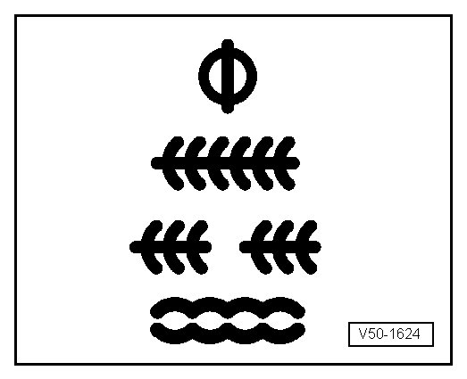

Symbols For Welding Operations
Symbols for Welding Operations
RP Spot welded seam (single row) RP = spot welding
RP Spot welded seam (double row)
RP Spot welded seam (double row offset)
SG Plug weld seam SG = Shielded arc welding
SG Stepped seam

SG Continuous seam
SG Continuous seam (staggered)
Brazing